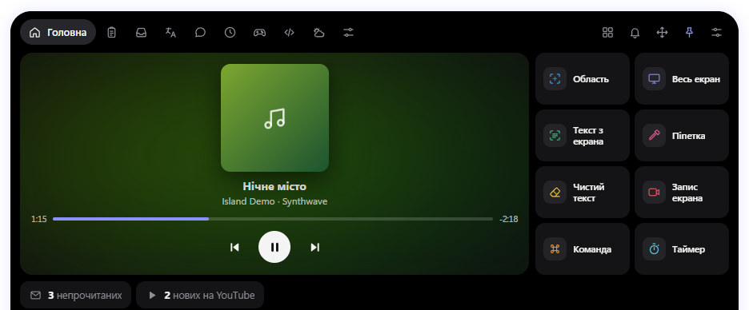
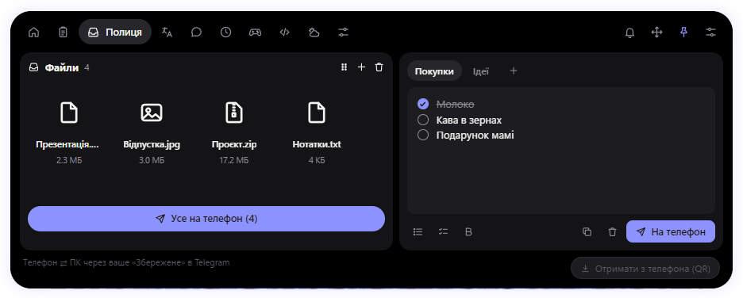
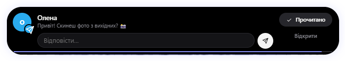
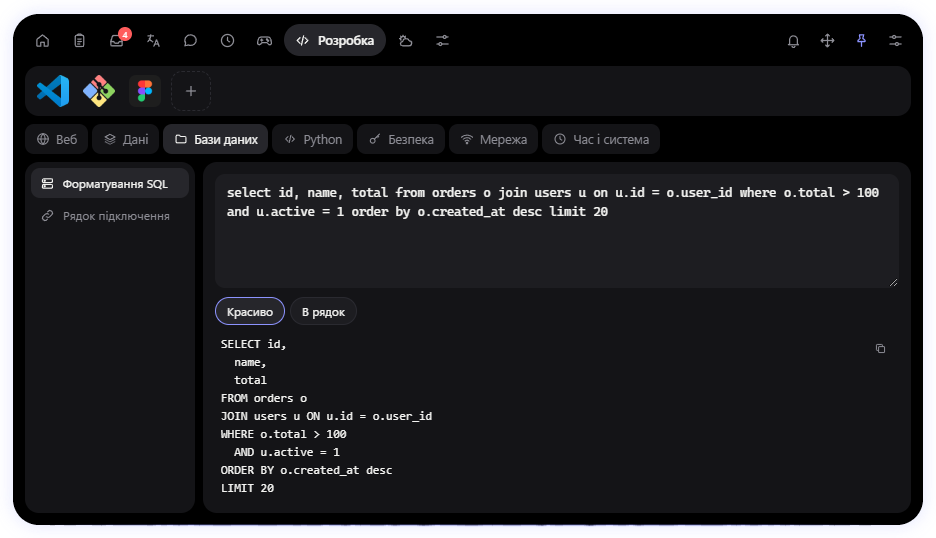
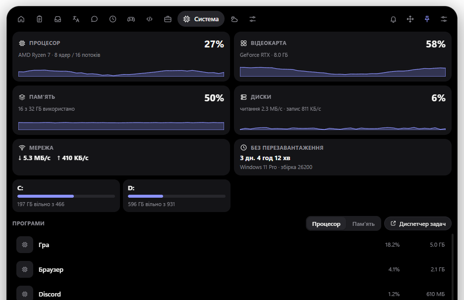
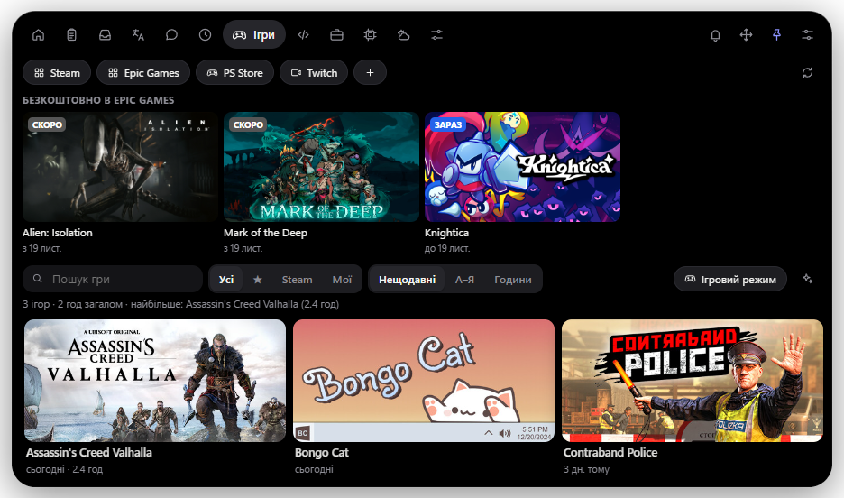
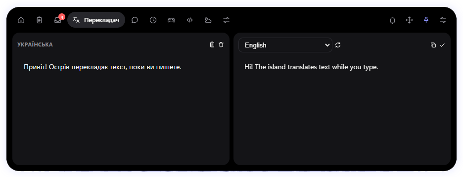

Музика, сповіщення з відповіддю, файли на телефон і ще десятки дрібниць — у живій пілюлі вгорі екрана. Завжди під рукою, ніколи не заважає.

Острів сидить над вкладками браузера, пропускає кліки, коли не потрібен, і розгортається, коли ви наводите курсор.
Будь-який плеєр: Spotify, YouTube, Apple Music. Обкладинка, хвиля в ритм, синхронний текст пісні.
Відповідайте в Telegram прямо з острова. Серії повідомлень складаються в один тост.
Файли до 2 ГБ і текст через ваше «Збережене» в Telegram — з будь-якої мережі.
Перетягніть файли на острів — вони почекають. Нотатку — на телефон одним кліком.
Історія скопійованого з пошуком і таймером автовидалення.
Переклад наживо 12 мовами, годинник для міст, таймер, будильники, нагадування.
Steam, Epic, GOG і свої лаунчери. Друзі онлайн, безкоштовні ігри тижня.
25+ інструментів у теках: веб, SQL, Python, хеші, мережа, cron. Запити Claude Code з кнопками.
Процесор, відеокарта, памʼять, диски й мережа з живими графіками.
ПДВ, сума прописом, курси НБУ, IBAN, оцінки, дати й робочі дні.
Завантаження, флешки, Bluetooth, живлення, нові листи, події календаря.
Надсилайте з телефона в «Збережене» Telegram — фото й файли з’являться на полиці острова. З ПК — так само назад. Без кабелів і спільної мережі.

Повідомлення з Telegram з’являються на острові з полем відповіді. Discord, Gmail та інші програми — теж тут, але чати без звуку лишаються тихими.

Форматування SQL і JSON, CSV ⇄ JSON, генерація TypeScript-інтерфейсів і Python-класів, хеші, підмережі, cron, кольори з контрастом WCAG — і запити Claude Code з кнопками ✓/✕.

Процесор, відеокарта, памʼять, диски й мережа — з живими графіками. Яка програма гальмує — видно одразу, а завершити її можна одним кліком.

ПДВ і сума прописом, курси НБУ, перевірка IBAN, ЄДРПОУ та ІПН, кредитний калькулятор, середній бал, випадковий учень, дати й робочі дні, QR-коди, транслітерація.

Пишіть — переклад з’являється сам. Таймер з колесами як на iPhone, будильники з днями тижня, секундомір і нагадування звичайними словами: «подзвонити мамі завтра о 9».

Інсталятор Island-Setup.exe — кнопкою вгорі.
Поки програма без цифрового підпису, Windows покаже попередження: «Докладніше» → «Все одно запустити».
Острів з’явиться вгорі екрана, а нові версії запропонує встановити сам.
Так. Island працює лише на вашому ПК. Сесії, токени й ключі зашифровані Windows (DPAPI) і нікуди не надсилаються, крім самих сервісів, які ви підключили. Оновлення підписані цифровим підписом автора — підмінене оновлення Island не встановить.
Island поки не має платного сертифіката розробника, тому SmartScreen не знає видавця. Натисніть «Докладніше» → «Все одно запустити».
Island безкоштовний і без реклами.
Українська, English, Polski, Deutsch, Español, Français, Nederlands, 中文, 日本語, 한국어 — перемикаються в налаштуваннях.
Ні: пілюля пропускає кліки до вкладок під нею, ховається в повноекранних програмах і може ховатися сама, коли ви нею не користуєтеся.
Island сам повідомить про нову версію: «Налаштування → Про програму → Оновити». Нічого завантажувати вручну не треба.
Автор читає кожен відгук. Пошта не потрібна — залиште контакт, лише якщо хочете отримати відповідь. Відгук також можна надіслати з самої програми: «Налаштування → Про програму».